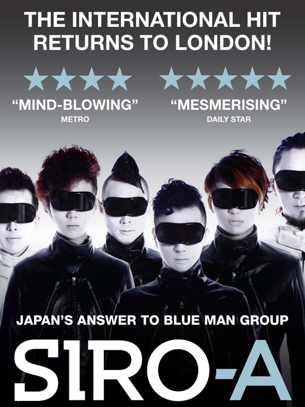
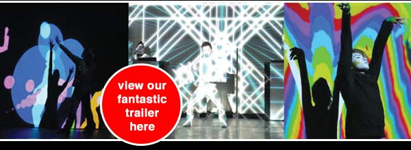

| MONDAY SOLUS HEADER HERE |
| PREMIUM SEAT OFFER: MON - THURS £20 / FRI - SUN £25 DONT MISS THIS UNIQUE MULTIMEDIA SHOW! GOOD FOR ALL THE FAMILY |
||
|  | ||
|
TECHNODELIC ENTERTAINMENT ON A WHOLE NEW FREQUENCY! Often described as Japan’s answer to the Blue Man Group, SIRO-A is a revolution in live entertainment, fusing mime, groundbreaking visual effects and an electro soundtrack to create a mind-blowing theatrical experience that is a feast for the senses. Through dance, mime and puppetry, the company of six Siro-performers interact with technology in a way never seen before. Featuring spectacular video projection, light animation, stunning laser effects and a pulsating electro beat, SIRO-A is family entertainment like no other. SIRO-A is fast becoming a worldwide phenomenon, having performed to 30,000 people at the Shanghai Expo and winning the Spirit of the Fringe award at the prestigious Edinburgh Festival. Now this visually stunning show is returning to London where it has already been wowing audiences and critics alike. |
||
|  | ||
 |
||
| MONDAY SOLUS FOOTER HERE |